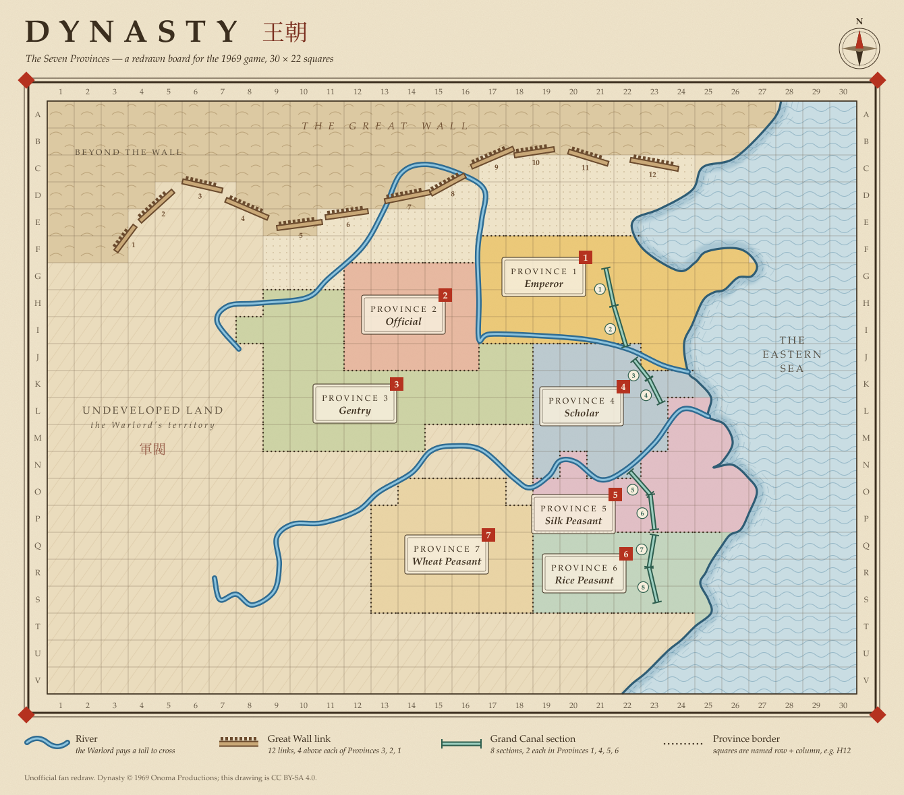

Onoma Productions · 1969
DYNASTY
Rules
A socio-economic-political game for four to eight players.
Contents
How to read the colors
Where the rules needed a decision
The three original sources do not always agree. Every place a decision had to be made appears as a pink note where it matters, numbered in reading order, and again in full in Appendix D with the original wording — so you can overrule it at your own table. Pink chips inside the province sections are sums of money, not notes.
The game in short
The Emperor is just and benevolent, while the Official can be persuaded to take bribes. The Gentry/Landowner will try to raise the rents legally, while the lawless Warlord uses soldiers to raid the neighboring provinces — to lie, cheat, steal. Meanwhile, the Peasants can always revolt.
Your game of Dynasty simulates a real-life environment. The object is survival: survival in a somewhat hostile and competitive society. Each player is handed a province, a personality and a set of obligations, and must make a living inside a system that was not designed to be fair.
The nation must feed a growing population from a harvest that does not grow by itself. The only way out of that trap is Public Works, and Public Works need the Emperor's money and everyone's cooperation. Nearly everything else is negotiable. There are no dice. Prices, cost-sharing, bribes, alliances, threats and rents are all settled by talking, and most of the rules exist to say who has leverage over whom.
The winner or winners are those who improve their social position. The game ends in one of two ways: all of the Public Works are built, in which case the players have collectively survived and the Emperor's reign has been a glorious one; or the players cannot solve the social-economic-political problems the game presents — that is, the system has defeated their ability to cope. Section 18 sets out how to settle the result.
Components
The map. A canvas map divided by dotted lines into eight Provinces, each labeled with a social position and numbered by social rank. Province 1 is the highest.
Grain. All money in Dynasty is bags of grain, counted in millions.
47 wooden pieces. Six kinds of realia, four of each, and the wooden public works:
| Count | Piece | What it is |
|---|---|---|
| 4 |  Customs House Customs House | Realia of Province 2 · squat, flared at the base |
| 4 |  Land Deed Scroll Land Deed Scroll | Realia of Province 3 · a rod with a roller at each end |
| 4 |  Bamboo Brush Bamboo Brush | Realia of Province 4 · tapered to a point |
| 4 |  Dragon Jar Dragon Jar | Realia of Province 5 · ribbed barrel |
| 4 |  Wooden Bowl Wooden Bowl | Realia of Province 6 · open and hollowed |
| 4 |  Vase Vase | Realia of Province 7 · bulbous urn |
| 3 |  Summer Palace, Summer Palace,  Winter Palace, Winter Palace,  Marble Pagoda Marble Pagoda | Imperial Public Works |
| 12 |  Great Wall links Great Wall links | Public Works |
| 8 |  Grand Canal sections Grand Canal sections | Public Works |
16 soldiers, eight of one color and eight of another. The Warlord picks one color for the raiding army; the other color is sold to the provinces as mercenaries.
20 I Ching cards, which designate natural phenomena as annual harvest, population growth, and personal and national disasters.
Squares of colored paper. Pink squares are the raid squares — forty of them — used to mark ground the Warlord has plundered. Green squares are the new harvest squares, used to mark newly developed land and sea.
Eight Province Instruction Booklets, one per role — reproduced here as Part Two.
Paper cut-outs you make yourself. The Province 2  Irrigation System and the two
Irrigation System and the two  Reservoirs have no wooden pieces, and unlike the Great Wall and the Grand Canal they have no printed slot on the map. There is no single correct size, but we have some suggestions here:
Reservoirs have no wooden pieces, and unlike the Great Wall and the Grand Canal they have no printed slot on the map. There is no single correct size, but we have some suggestions here:
| System | Province | What it holds | Suggested cut-out |
|---|---|---|---|
| Irrigation System | 2 · Official | Ditches, dikes, small canals and dams | |
| Reservoir | 7 · Wheat Peasant | One large reservoir, two canals, 500 miles of ditches | |
| Reservoir | 3 · Gentry | Four canals, three reservoirs, 1,000 miles of ditches |
What the cut-out does on the board.
- When the system is built, lay it on empty squares inside its own province — not on a square holding realia.
- It is a public work, so a Warlord soldier that crosses it pays that province the 5 million transportation fee, just as for a river or the canal. A bigger cut-out earns more tolls, which is one reason to keep to the suggested sizes.
- It is not realia: the booklets name only the three palaces as the Emperor's structures. A square under a cut-out can still be raided for the ordinary tribute, but the Warlord can't demand the system's cost.
The map
The map holds seven bordered provinces — the developed land, the ground that already produces a harvest — and three kinds of undeveloped land: the Warlord's territory in the west, the strip below the Great Wall in the north, and the sea to the east.

Who can expand where. Provinces 1, 2 and 3 push north into the strip below the Great Wall. Provinces 1, 4, 5 and 6 border the sea. Provinces 3, 4, 5, 6 and 7 border the Warlord's undeveloped land, which runs down the west and along the south — so peasant expansion is a land grab into Warlord territory, which the rules nowhere forbid and the Warlord will nowhere welcome.
The grid does not produce anything. Your harvest is the same whether your province holds thirty squares or sixty. The squares exist to place realia, mark raids, move soldiers, and hold new harvest squares. Province size on the map is scenery; only the numbers in Section 7 feed anybody.
The river runs from the western territory across the middle of the country to the sea. It matters for one rule: the Warlord pays a toll every time a soldier crosses it (Section 14).
Setup
1 · Deal the provinces
Take one Province Instruction Booklet per player, according to the table below. Close them, shuffle them, and let each player pick one. Play according to the personality and instructions in the booklet you drew.
| Players | Provinces used |
|---|---|
| 4 | 1 Emperor, 2 Official, 3 Gentry, 4 Scholar — or 1 Emperor and any three Peasants |
| 5 | Either group above, plus the Warlord |
| 6 | 1 Emperor, 2 Official, 3 Gentry, the Warlord, and any two Peasants |
| 7 | 1 Emperor, 2 Official, 3 Gentry, 4 Scholar and all three Peasants — no Warlord |
| 8+ | All eight Provinces |
Note 1 The can numbers the Warlord as Province 5 and the peasants 6, 7, 8. The map and the booklets overrule it.
Note 2 Seven players really is the one game with no Warlord in it.
Note 3 When a province with a job to do is empty — no Scholar at six players, no Gentry in the peasant game — someone else must take over the work.
2 · Grain
Each player begins with 60 million bags of grain. This represents a good harvest for the first round of play.
3 · Realia
Each province takes its starting stock of realia from the box (Section 10). Realia belonging to provinces nobody is playing stays in the box, and is never auctioned.
Bought realia goes on the board at once. Your starting stock waits beside the board until you auction it. Whenever anyone buys a piece, at auction or in a trade, they must place it immediately on a square inside their own province (Section 10, Note 10).
4 · Soldiers
The Warlord takes an army: two soldiers with five or six players, four with eight or more. These may be placed on any squares in the undeveloped land. The other color goes aside as stock to sell.
5 · The Harvest Pile
The Gentry/Landholder sets out the bank of grain where everyone can see it.
6 · I Ching
The Scholar shuffles the twenty I Ching cards and places them face down on the board. No player may look at the unturned cards. I Ching is not consulted during Round One — the 60 million each player starts with is the first harvest.
7 · Cut-outs
Make a paper cut-out for the irrigation system and each Reservoir owed at this table, using the sizes in Section 2: 1 × 2 squares for Province 2 if the Official is playing, 2 × 3 squares for Province 3 if the Gentry is playing, and 2 × 2 squares for Province 7 if the Wheat Peasant is playing. Set them aside; each goes on the board when it is built. A work in an empty province is never built, so it needs no cut-out.
Order of play
A round is one year. Round One begins at step 4, since the harvest has already been paid out and I Ching is not consulted.
- ScholarI Ching. Turn the top card and read it aloud. Apply any change in population, and play a Personal Disaster if the card calls for one.
- GentryHarvest. Pay each player the harvest the card designates, plus any increase earned by Public Works in that province.
- PeasantsRents. Each Peasant pays the Gentry a land rental. If the Gentry does not demand it, the Peasants need not pay.
- EmperorTax declared. The Emperor announces a percentage, the same for everyone.
- OfficialTax paid. Each player calculates the tax owed and pays the Official, who delivers it to the Emperor.
- EmperorPublic Works. The Emperor pays for and builds one project. Cost-sharing and new land purchases are negotiated now.
- All, in orderAuction. Beginning with Province 1 and proceeding in numerical order, each player auctions one piece of realia. The Warlord raids instead of auctioning.
- ProvincesSoldiers. After the Warlord has moved, provincial soldiers may move one square.
- EmperorSalaries. The Emperor pays the Official and the Scholar.
Trading, bribery, alliances, threats and private deals may happen at any point in the round.
The provinces
Provinces are numbered by social rank, 1 being the highest. Province 8 is drawn dashed throughout this book because the Warlord sits outside the social order rather than at the bottom of it.
| # | Role | Population | Class | Job at the table |
|---|---|---|---|---|
| 1 | Emperor | 14M | Stands alone | Sets the tax, builds, settles disputes |
| 2 | Official | 12M | Upper | Collects the tax |
| 3 | Gentry / Landholder | 12M | Upper | Banks the Harvest Pile, collects rent |
| 4 | Scholar | 12M | Upper | Reads I Ching, keeps the population count |
| 5 | Silk Peasant | 14M | Lower | — |
| 6 | Rice Peasant | 14M | Lower | — |
| 7 | Wheat Peasant | 14M | Lower | — |
| 8 | Warlord | 8M | Outside | Raids everyone, sells soldiers |
The eight provinces hold 100 million people between them, which is where the nation's population counter starts.
The Emperor negotiates with the upper class first — the Official, Gentry and Scholar. That is the chain of command, and it is why a Peasant who wants to be heard usually has to buy an ally.
Population, harvest, consumption
This is the engine of the whole game, and it is worth understanding before the first card is turned.
Your harvest does not depend on how many people you have. Whatever your population, a good harvest is 100 million bags of grain, an average harvest 75 million and a bad harvest 50 million. The Warlord's barren land yields 40, 30 and 20.
Your consumption does. Twelve million people eat 40 million bags a year, no matter how good or bad the harvest. So do fourteen million. The Emperor's court is more expensive: fourteen million people in Province 1 eat 60 million. The Warlord's eight million eat 20 million.
income = harvest + public works increases − consumption
When an I Ching card announces that the population has increased by one half or doubled, every province's population changes with it — and so does its consumption. The harvest does not. Population growth is pure loss, and the nation slides toward famine unless somebody builds something. This is the problem the game is asking you to solve.
How the population moves
Growth is national and it is uniform. The provinces start at different sizes, but a card that doubles the population doubles everyone: the base numbers differ, the multiplier never does. That is why the income tables below are indexed by multiple rather than headcount, and why a single row of one table lines up with the same row of every other.
It has a ceiling, and the ceiling is reachable. A doubling card takes effect at most twice; an increase-by-one-half card takes effect once. The nation therefore tops out at 100 × 2 × 2 × 1½ = 600 million, which the cards state outright — and which is exactly the ×6 row at the bottom of every table. Once the country is there, it is there for good, and a bad harvest at ×6 costs a peasant province 190 million bags it does not have.
The Scholar keeps the national population counter and announces the new figure whenever it changes.
Income tables
| Population | Consumption | Good | Average | Bad |
|---|---|---|---|---|
| ×1 | 40 | +60 | +35 | +10 |
| ×1½ | 60 | +40 | +15 | −10 |
| ×2 | 80 | +20 | −5 | −30 |
| ×3 | 120 | −20 | −45 | −70 |
| ×4 | 160 | −60 | −85 | −110 |
| ×6 | 240 | −140 | −165 | −190 |
| Population | Consumption | Good | Average | Bad |
|---|---|---|---|---|
| ×1 | 60 | +40 | +15 | −10 |
| ×1½ | 90 | +10 | −15 | −40 |
| ×2 | 120 | −20 | −45 | −70 |
| ×3 | 180 | −80 | −105 | −130 |
| ×4 | 240 | −140 | −165 | −190 |
| ×6 | 360 | −260 | −285 | −310 |
| Population | Consumption | Good | Average | Bad |
|---|---|---|---|---|
| ×1 | 20 | +20 | +10 | 0 |
| ×1½ | 30 | +10 | 0 | −10 |
| ×2 | 40 | 0 | −10 | −20 |
| ×3 | 60 | −20 | −30 | −40 |
| ×4 | 80 | −40 | −50 | −60 |
| ×6 | 120 | −60 | −70 | −80 |
The Harvest Pile
The Harvest Pile is the bank, and the Gentry/Landholder runs it. It is made up of forty half-million bags, fifty 1-million bags, forty 2-million bags, fifty 5-million bags, twenty 10-million bags, twenty 20-million bags, ten 50-million bags and ten 100-million bags.
It is not the Emperor's treasury. Taxes go to the Emperor personally, into a private reserve, and that reserve pays for Public Works and salaries. The Harvest Pile is separate.
| Out of the pile | Into the pile |
|---|---|
| Every player's annual harvest | Fines and personal disasters |
| New harvest squares, when bought | 75% of every auction price |
| 60 million to a player who changes province | 75% of every soldier the Warlord sells |
| Realia sold back, at 2 million a piece |
The Gentry performs all transactions concerning the pile — which means the greediest player at the table is also the banker. Watch closely.
Rounding. The smallest bag is half a million, so every payment worked out as a fraction — an auction commission, a tax, a personal disaster that takes a half or a third — rounds down to the half million, in favour of whoever pays. A tax of 30% on an income of 15 is 4.5; at 30% on 17 it is 5.1, so 5. A third of 31 is 10.
Running out of grain. When a payment you owe would take your grain below zero — a negative harvest, tax, rent, a personal disaster, a card's levy, the Warlord's tribute, a salary the Emperor owes — first sell realia back to the Harvest Pile at 2 million a piece, choosing which pieces, until the payment is covered or you have none left. A piece sold back comes off the board and joins the pile's own stock. At the next auction, after the provinces have sold their lots, the pile auctions everything it holds, and the whole price goes back into the pile.
If you are still short, your grain goes below zero: you owe the difference to the Harvest Pile. While you owe it you may not bid, buy or trade realia, give grain to anyone, pay a share of a public work, buy soldiers or change provinces. Every bag you receive — a harvest, rent, a salary, a commission, a toll — pays the debt first. A player who takes over a province takes over all of the displaced player's grain, debt included. A player the table acclaims Emperor during Chaos may take the throne in debt; the imperial reserve that comes with it pays the debt off. A debt is also a cause for revolt (Section 16). It changes nothing at the end of the game: players are ranked by province (Section 18).
Example. The Silk Peasant holds 26 million and one Bamboo Brush when a drought brings an income of −45 million. The Brush is sold back first, leaving 28; the harvest takes 45, so the Silk Peasant owes 17 to the Harvest Pile, may not bid at this round's auction, and pays the 17 off from the next grain that comes in.
Taxation
The Emperor declares a tax percentage at the start of each round, from 10% to 90%. Every player then pays that percentage of their income for the year, rounded down to the half million (Section 8). All income is taxable.
Naturally, the Emperor's decrees must be reasonable, or the players will revolt. Three of the six causes for revolt are about money the Emperor did or did not take.
The Official collects the tax and delivers it, and is also expected to make certain none of the players are cheating, which is a joke the game does not acknowledge. The Emperor may instead collect directly, or designate any player as tax collector.
Realia
Realia are the objects of status: customs houses, land deed scrolls, bamboo brushes, dragon jars, wooden bowls and vases. Collecting a set of them is how a player climbs the social ladder.
Native ownership
Each type of realia belongs to one province, and that province's player is the one who sells it.
| Realia | Belongs to | Realia | Belongs to |
|---|---|---|---|
| Customs House | 2 · Official | Dragon Jar | 5 · Silk Peasant |
| Land Deed Scroll | 3 · Gentry | Wooden Bowl | 6 · Rice Peasant |
| Bamboo Brush | 4 · Scholar | Vase | 7 · Wheat Peasant |
Starting stock
| Players | Each province starts holding |
|---|---|
| 4–5 | One piece of its own realia, plus two pieces of the one type it will never need |
| 6 | Two pieces of its own realia |
| 7+ | Four pieces of its own realia |
Stock waits beside the board; bought pieces go on it immediately. Your unsold stock is not placed on the map. The moment a piece is sold, the buyer must place it on a square inside their own province, before play moves on. See Placement below.
At four or five players the second type you hold is exactly the type your own objective does not ask for, and it comes in a pair — enough for both players who need it. Your own piece is different: there is only one, and both other players holding realia need it. So in a small game only one player can complete a set at a time, and the others wait for a seat change to send pieces back to auction.
The auction
You must auction one piece of realia during each round, until all your pieces have been sold. The minimum bid is 2 million bags of grain, but you may set any higher minimum you like. One fourth of the final sale price, rounded down to the half million, belongs to you as a commission; the rest goes to the Harvest Pile. On a sale of 9 you keep 2 and the pile takes 7; on 7, 1.5 and 5.5. Any realia returned to you during the game must be auctioned again as soon as possible.
The Emperor does not bid. Everyone else may.
Placement
Any realia you acquire, whether at auction or by private trade, must be placed on a square within the boundaries of your Province. It cannot be moved off that square except when it is traded or sold to another player, sold back to the Harvest Pile for 2 million bags of grain, or you move to another province.
Realia sitting on a square is also a target. If the Warlord raids that square, the piece itself may be demanded as tribute.
Unsold stock stays off the map. A piece goes onto a square the moment it is bought at auction or taken in a trade — the buyer places it at once. Pieces returned on a change of province go back into their province's unsold stock until they are auctioned again.
Objectives and changing provinces
Every province except the Emperor's and the Warlord's has an objective: a set of realia belonging to other people, plus 20 million bags of grain.
| Players | What you must collect |
|---|---|
| 4–5 | Four specific pieces of realia, listed in your booklet, and 20 million bags of grain |
| 6 | One piece of realia native to each other realia-holding province, and 20 million |
| 7+ | One piece of every type of realia except your own, and 20 million |
The Warlord's objective is different: raid a different piece of realia from each player.
Becoming Emperor
When you have accumulated all of the necessary realia you may declare yourself Emperor and exchange provinces with the Emperor. You must return all realia in your possession to the Provinces where they originated, keeping only your grain surplus. The Emperor must give you the entire imperial grain reserve, then takes your former position, is entitled to all your former privileges, and draws 60 million bags of grain from the Harvest Pile.
Only the Official, the Gentry, the Scholar and the Warlord may take the throne this way. A Peasant must first move up into an upper-class province and complete that province's objective.
Replacing other players
When you have accumulated all of the realia listed under Objectives, you may instead choose to replace a player other than the Emperor. You may keep all realia you have purchased except those pieces which originated in the province you are moving into. Realia belonging to your new province must be placed on sale at the earliest possible time. If you elect to replace the Scholar, you must auction the bamboo brushes; if you elect to replace the Silk Peasant, then you must auction the dragon jars.
You may keep all of your grain surplus, as well as all grain belonging to the player you replace.
When being replaced
Return all realia in your possession to the Provinces where they originated. Change seats with the player replacing you and become the new owner of that player's old province. You may draw 60 million bags of grain from the Harvest Pile, and must now play the game according to your new personality.
Climbing on
A player who changes seats keeps most of a set and two players' grain, so the next move is close: usually one piece short, and everyone at the table knows which. This is deliberate. It matters most to a Peasant, who must climb twice to reach the throne, and it is what lets the lower class keep pace with an upper class that starts one step away.
The result is settled by the seat you hold when the game ends (Section 18), and finishing the Public Works ends it. A player who has climbed does well to help pay for them, before somebody else climbs over them.
Public Works
The Public Works are the nation's way out of famine, and building all of them ends the game. The Emperor pays for and builds one project each round, and is responsible only for provinces where there is a player.
Great Wall in one round is one project. A canal section and a palace in the same round is two.| Project | Where | Cost | Effect |
|---|---|---|---|
| Summer Palace | Province 1 | 20 | Required before the Great Wall and the Grand Canal in Province 1 |
| Winter Palace | Province 1 | 20 | Required before the Grand Canal in Provinces 4, 5 and 6 |
| Marble Pagoda | Province 1 | 20 | Must be built in any round the Emperor builds none of the systems |
| Great Wall | Links 1–4 above 3, 5–8 above 2, 9–12 above 1, as labelled on the map | 40 per link | Four links above a province open the new land below them |
| Grand Canal | 2 sections each in 1, 4, 5, 6 | 40 per section | +10 harvest per section, per round |
| Irrigation System | Province 2 | 30 | +10 per round |
| Reservoir | Province 3 | 80 | +20 per round |
| Reservoir | Province 7 | 60 | +20 per round |
Who pays
The Emperor pays outright for the Grand Canal in Provinces 5 and 6, and for the Reservoir in Province 7. Everything else is negotiated: the province player and the Emperor haggle over the split, and the Emperor will expect a share of the increase. Neither side can force the other, which is the point.
New land and sea
Harvest squares are the only place in Dynasty where your production grows with your population. Every other income in the game is flat. They are also, deliberately, out of reach until the crisis has already started.
When you may develop
- Your province's population must have at least doubled — 24 million for Provinces 2, 3 and 4; 28 million for Provinces 1, 5, 6 and 7. This can only happen when an I Ching card announces an increase, so the earliest possible purchase is Round Two and in practice it is much later.
- The strip below the Great Wall opens to a province only when all four links above that province are built: for Provinces 2 and 3, that is their only new land; Province 1 may develop the sea before then.
Cost and yield
New harvest squares cost 20 million bags of grain each, purchased from the Harvest Pile during the Public Works step and marked with a green square. Each produces 20 million bags per round, for the rest of the game, starting with the next round's harvest. The cost must be shared with the Emperor, who will also seek to share the harvest. Negotiate.
There is no limit. A province may buy as many squares as it can pay for, every round, and the purchases are not the round's one public-works project: the Emperor still builds a project as well. A square pays for itself in a single round and keeps paying, which makes new land the strongest investment in the game. That is why the population rule matters: nobody can buy a square until their province's population has doubled, so this route opens only late in the game, when the doubling has already pushed consumption past most harvests.
Where the squares go
Each province develops the ground its booklet names, touching the province or a square it has already bought: Provinces 2 and 3 the strip below the Great Wall; Provinces 4 and 5 the sea; Province 6 the sea or the Warlord's land; Province 7 the Warlord's land; Province 1 the strip or the sea. A square bought becomes part of the province. The Warlord can raid it like any other square of the province, and a soldier that steps onto one in the Warlord's land raids it; squares in the sea are out of every soldier's reach.
An Emperor who cannot or will not subsidize the development of new harvest areas is one of the six causes for revolt. The Emperor knows it, and so do you.
The Warlord, raids and soldiers
Raiding
The Warlord marches a soldier onto an un-raided square inside a province and demands tribute: 5 million bags of grain, or 10 million in Province 1. Place a pink raid square on that spot and stand the soldier on it. The Warlord may raid as many squares in a round as there are soldiers to do it.
If the raided square holds a piece of realia, the Warlord may demand the 5 million, the realia itself, or the cost of the structure. If it holds one of the Emperor's buildings — the Summer Palace, Winter Palace or Marble Pagoda — the Emperor must pay the full cost of the structure. A raid on any other square, including one holding the Grand Canal, the irrigation system or a Reservoir, is an ordinary raid; the work is undamaged.
Raided ground stays raided
Once a square has been raided and the Warlord paid, that square cannot be raided again, ever. The raid square remains on the map, though the Warlord's soldiers may land on a raided square as often as they wish. A province player whose own soldier occupies a raided square may reclaim it and remove the marker; it still cannot be raided a second time.
Crossing water
The Warlord's soldiers may go anywhere on the board: into any province, beyond the Wall, across water. Like every soldier, though, each moves only one square a round (below). Every soldier that crosses a river or a public works project costs the Warlord a transportation fee of 5 million bags of grain, paid to that province. It is the only money that reliably flows out of the western territory.
Buying soldiers
Your only defense against the Warlord is to purchase soldiers. The Warlord must sell to any player who wishes to buy, at 20 million bags of grain each, keeping 25% of each sale as commission and turning the rest over to the Harvest Pile. Arming yourself is therefore also how you fund the army coming for you.
Moving soldiers
Place purchased soldiers in your own province. They cannot move at all until the Warlord has raided your province. After that, you may move all your soldiers one square each round, but only after the Warlord's soldiers have moved.
Every soldier moves at most one square a round, the Warlord's included, in any direction, diagonals included. A Warlord soldier raids the square it moves onto, so each soldier raids at most one new square a round. A soldier captures by moving onto an occupied square horizontally or vertically; a soldier can never be captured diagonally. Captured soldiers are removed from play. Soldiers may be marched together as a group, and a marched group may be dispersed simultaneously at any time.
I Ching and personal disasters
Pronounced "e ching."
The Scholar turns one card at the start of every round from Round Two onward and reads it aloud. All players must obey whatever instructions are on the card. A card sets the harvest — sometimes for everyone, sometimes good for some provinces and bad for others — and may raise the population, tax the provinces, damage unfinished Public Works, or call for Personal Disasters.
There are twenty cards and they are not reshuffled. Five of them raise the population — three that double it and two that add half — and the deck stops counting at 600 million. That is the clock the whole game runs on.
Personal disasters
Every booklet contains three, numbered 1 to 3. When I Ching announces a personal disaster, you play yours in numerical order — not the one you would prefer. When all three have been played, they may be played over again. They are printed with each province in Part Two.
The first disaster in every booklet is cheap and fixed. The third, in almost every booklet, takes a fraction of everything you have, rounded down to the half million (Section 8).
Revolt and Chaos
You may revolt against the Emperor at any time during the game, provided that two other players agree that one of the following exists:
- The Emperor is unjust.
- The Emperor consistently demands taxes which are too excessive.
- The Emperor has too low a grain reserve.
- The Emperor has delayed too long in building Public Works.
- The Emperor cannot control the Warlord.
- The Emperor cannot, or will not, subsidize the development of new harvest areas.
Debt is a seventh cause. A player in debt to the Harvest Pile (Section 8) is facing starvation, and starvation is the one thing the peasants' booklets say will drive them to revolt. So while any player is in debt, that debt is a cause for revolt like the six above. It still needs two other players to agree, and the player in debt may be the one who revolts.
The price of revolt is Chaos. The nation is leaderless until a new Emperor emerges. To become the new Emperor, a player must have one of the following: the most money, the most friends, the most soldiers, or any combination of the above.
Note the second qualification in that list. Friends are a resource in this game, and the rules say so out loud.
Playing your personality
Each booklet opens with a personality, and this is a rule, not flavor text. For as long as you hold a province, your actions must be consistent with your personality as stated. A generous Official is not playing the game. A Gentry who forgets to collect the rents is not playing the game.
The revolt rules are the enforcement mechanism. There is no referee except the Emperor, and no penalty except the one the table agrees to impose.
Note that although the Peasants are described as not overly ambitious, they are ambitious enough to want to move ahead, up the social ladder.
This game gives you the opportunity to operate a mini country. You will be faced with all of the problems that confront most countries. How you solve the problems is the essence of the game. Use your common sense and your knowledge of the world around you. That is the true guide to Dynasty.General Instructions, 1969
Winning the game
The winner or winners are those who improve their social position. Note the plural: Dynasty does not crown a single victor, and it is perfectly possible for four people to win and two to lose.
How the game ends
By survival. All of the Public Works are built: three imperial buildings, twelve links of the Great Wall, eight sections of the Grand Canal, and the irrigation system and the two Reservoirs, in every province that has a player. The Emperor's reign has been a glorious one, and the nation has fed itself.
By collapse. The players cannot solve the social-economic-political problems presented by the game — the system has defeated their ability to cope. There is no procedure for this and no scoring; the table simply reaches a point where the harvest cannot cover consumption and no one can or will build. Nobody wins.
Settling the result
Rank every player by the number of the province they are sitting in when the game ends, 1 being highest, and compare it with the province they drew at setup.
| Outcome | Result |
|---|---|
| You are in a lower-numbered province than you started in | You have won. You improved your social position, which is the stated object |
| You are in the same province | Neither win nor loss. You survived, which is the other stated object |
| You are in a higher-numbered province | You have lost. Someone climbed over you |
| You are the Emperor and still on the throne | You have won. Your objective was to remain in power |
| You are the Warlord and have entered the social order at all | You have won. You began outside it |
If two players need separating, the larger grain surplus wins. The original rules give no tiebreak, because the original rules are not really interested in who came first — they are interested in whether the country made it.
How long a game takes
Longer than it looks. Budget five to eight hours for a full eight-player game, and three to five for four or five players.
Before the first card
Allow forty-five minutes. There is no teaching this game: each player reads a different booklet containing a personality, an objective, a realia list, an income table and three disasters, and none of it can be summarized by one person for the table, because half of it is positional knowledge nobody else is meant to have. Hand out the booklets, set out the Harvest Pile, and let everybody read.
During a round
| Phase | 8 players | 4–5 players |
|---|---|---|
| I Ching and the population count | 2 min | 1 min |
| Harvest paid out | 5 | 3 |
| Rents and salaries | 2 | 1 |
| Tax declared and collected | 5 | 3 |
| Public works negotiation | 5–10 | 4–8 |
| Auction | 10–15 | 5–8 |
| The Warlord moves and raids | 4 | 3 |
| Trades, bribes, side deals | 5+ | 3+ |
| Round total | 35–45 | 23–30 |
Rounds speed up once people stop looking things up — call it 25 minutes at eight players by the fourth or fifth year. The auction is the one phase that gets slower: by the time most provinces are one piece short of an objective, every lot is somebody's last piece and the bidding turns into a negotiation.
Why the end is unpredictable
There is no turn limit and no score to race toward. The game ends when all the Public Works are built — which is a large sum to reach, and the population may beat you to it — or when the players cannot cope. That second ending is a social event rather than a mechanical one: it happens when enough people are angry, and that depends on the table, not on the board.
In practice a group plays six to eight years in one long sitting and someone revolts along the way. Plan a full day with food, or agree in advance to use the short game below.
The short game
Agree before setup that the game ends after eight rounds, and score as in Section 18 from wherever everyone is sitting. Nothing else changes. Eight rounds is enough for the population to rise at least once, for the Emperor to fall behind on the Public Works, for two or three players to complete an objective and change seats, and for a revolt to be a live threat — which is the whole game in miniature. Note 19
Keeping it moving
- Use the income tables in Section 7, which are indexed by population multiple rather than headcount. Every player reads one row instead of doing arithmetic eight times a round.
- Set a minimum bid and a timer on each lot. The rules let the seller set any minimum above 2 million; a thirty-second clock turns a ten-minute auction into a four-minute one.
- Let the Emperor negotiate cost-shares while the auction runs. Nothing in the rules requires the table's full attention for a two-party bargain.
- Appoint someone other than the Gentry to count the Harvest Pile into stacks before play. Paying out eight harvests from a loose pile is the slowest minute of every round.
Part Two · The Provinces
Province 1 — The Emperor
Population 14 million · consumes 60 million · harvest 100 / 75 / 50
Personality
You are the Son of Heaven — the Emperor. You are forceful and thoughtful. To retain your power, you must watch over your people and understand their needs. You are just and reasonably compassionate. You reward those who obey and assist you. Your concerns are for the masses, not petty personal disasters. You stand above all men and your orders must be obeyed. Often you will delegate the workings of the bureaucracy to lesser men such as the Official or Scholar.
In your dealings with the people, you will always negotiate with the upper class first — the Official, Gentry and Scholar.
All edicts, decrees, orders and decisions made by you must be obeyed. In return, you must see to the welfare of your people at all times.
Objective
To remain in power. The game ends when you have successfully completed all of the Public Works — then your reign has been a glorious one.
Each round
- Declare the tax. Consult the harvest and the Income Tax Schedule to work out how much money you need, and direct the Official to collect the percentage you want.
- Build one Public Works project. If you are building none of the systems, you must build the Marble Pagoda.
- Pay salaries of at least 5 million each to the Official, for collecting your taxes, and the Scholar, for taking the census and educating the public.
- Settle disputes. You do not participate in the auctions.
Your Public Works
| Project | Cost | Who pays |
|---|---|---|
| Summer Palace — a display of your wealth and power | 20 | You |
| Winter Palace — the seat of your Government | 20 | You |
| Marble Pagoda — part of the Summer Palace | 20 | You |
| Great Wall, 12 links over Provinces 1, 2, 3 | 40 ea. | Negotiate with 2 and 3. Your strip below the Wall opens when your own four links stand |
| Grand Canal, 8 sections in Provinces 1, 4, 5, 6 | 40 ea. | You pay for 5 and 6 |
| Province 2 irrigation system | 30 | Negotiate |
| Province 3 Reservoir | 80 | Negotiate |
| Province 7 Reservoir | 60 | You |
You only have to build Public Works or new land and sea areas where there is a player. You are not responsible for an unoccupied province.
Beware the Warlord
Each raid square in your province costs you 10 million — double what anyone else pays. A raid on a square holding the Summer Palace, Winter Palace or Marble Pagoda costs you the full price of the structure.
Personal disasters
- You have just received, as a tribute to your armed might, a beautiful, full-blooded Arabian horse from the Middle East, transported via the Silk Route. These horses are very rare. In your excitement you mount the horse too quickly and it throws you. But you only suffer a broken arm. For this misfortune you vent your anger on the horse trainer, and lash the trainer 20 times. To appease your conscience, pay 4 million to the Harvest Pile.
- Your six year old Prince just broke the Empress' favorite ivory figure. The figure is over 500 years old and priceless. To appease the Empress, you have promised several new ones. Cost: 10 million.
- Your Prime Minister, Li Su, has recommended that you burn all the Confucian classics. The stated reason is that the ancient way of thinking is not inducive to the creation of a new society and progress. The social structure has gotten too complex to follow the old feudal system. You agree, and order the famous burning of the books. This act incurs the wrath of the scholars and the officials. To appease them you perform a solicitous act by paying off most of the top scholars. Pay 30 million.
Part Two · The Provinces
Province 2 — The Official
Population 12 million · consumes 40 million · realia: the Customs House
Personality
You will please the Emperor. You will be harsh and unfeeling in executing the imperial demands. You have no respect or interest in the Peasants and barely consider the Gentry and Scholar. You gather your personal wealth by using the power of your social position, by seeking bribes and surrendering your moral values whenever there is a gain to be made in your goal of becoming the Emperor. All your decisions are practical.
Objectives
When you possess all of the following, you may change places with the Emperor or any other player.
| Players | Collect |
|---|---|
| 4–5 | One Vase, one Wooden Bowl, one Land Deed Scroll, one Bamboo Brush, and 20 million |
| 6 | One realia from each other realia-holding player, and 20 million |
| 7+ | All of the above plus one Dragon Jar |
Your realia — Customs Houses
You start with one Customs House and two Dragon Jars at 4–5 players; two Customs Houses at 6; four Customs Houses at 7 or more. You will never need a Dragon Jar. Province 5 will.
Tax collection
When the Emperor has announced the tax to be collected for the round, consult your tax chart, then collect the tax and give it to the Emperor. Make certain none of the players are cheating.
Annual salary
In payment for your annual task of collecting taxes, the Emperor will pay you at least 5 million at the end of each round.
Your Public Works
- Irrigation System, 30 million — ditches, dikes, small canals and dams. Must be built before the game can end. Negotiate your share with the Emperor. Increases your harvest by 10 million per round. Make your own paper cut-out, about 1 × 2 squares (Section 2).
- Four links of the Great Wall above your province, 40 million each. Must be built before the game can end. The Emperor will expect you to share the cost.
Developing new land
You may not develop the new land between your Province and the Great Wall until your population has reached at least 24 million and all four links are complete. Squares then cost 20 million each and produce 20 million per round; share the cost with the Emperor, who will also seek to share your harvest.
Personal disasters
- As an Official, you are responsible for the care and feeding of the imperial troops in your area. While on an inspection tour of the garrisons, your chariot drops a wheel and crashes into a tree. Fortunately you are not hurt, but your driver is crippled for life. As the driver is your personal servant, you must provide a pension and see to it that the family is also taken care of. Cost of pension: 4 million to the Harvest Pile.
- A portion of the Grand Canal has been finished and, as requested by the Emperor, you are making an inspection trip via the imperial barge. Since the canal is brand new, the bargemen have some difficulties. And while traversing one of the locks, the barge rams one of the gates. The damage is considerable. In order not to lose face with the Emperor you take care of the damages yourself. Repairs: 10 million to the Harvest Pile.
- You have been appointed the tax collector. As such you have hired many assistants to cover the large territory. One of the assistants is a nephew by marriage. Not very competent, this assistant loses an entire portion of the annual tax in a game of Mah Jong with the local toughs. This is tax money for the Emperor and such a loss would cause the family much grief, not to mention the Emperor's punishment of you. So, at the family's insistence, you make up the loss out of the family fortune. Cost: one half of your annual income to the Harvest Pile.
Part Two · The Provinces
Province 3 — The Gentry / Landholder
Population 12 million · consumes 40 million · realia: the Land Deed Scroll
Personality
You are a selfish and greedy person. Your only ambition is to become rich and powerful enough to own more land and thereby control more people. Outwardly you are kind and generous, especially to the Official, Scholar and Emperor, for they are your peers and you are a fawner by nature. But you will take advantage of them if they are foolish enough not to watch you carefully. You treat the Peasants as if they were your children. You are just and paternal when dealing with them, for you consider them too stupid and too poor to threaten your social position.
Objectives
| Players | Collect |
|---|---|
| 4–5 | One Vase, one Dragon Jar, one Customs House, one Bamboo Brush, and 20 million |
| 6 | One realia from each other realia-holding player, and 20 million |
| 7+ | All of the above plus one Wooden Bowl |
Your realia — Land Deed Scrolls
You start with one Land Deed Scroll and two Wooden Bowls at 4–5 players; two Scrolls at 6; four at 7 or more.
The Harvest Pile
It is your duty to perform all transactions concerning the Harvest Pile. At the beginning of each round you must pay every player the annual harvest, as designated by I Ching. When I Ching has been read and you know whether the harvest is good, average or bad, consult the harvest chart, draw the appropriate amount from the pile and distribute it.
Annual land rental
Because you are a landholder, you may collect a rental of at least 5 million during each round from each Peasant player. You may negotiate to raise the rent at any time. If you forget to demand it, you do not get it.
Your Public Works
- Reservoir, 80 million — three reservoirs, four canals and 1,000 miles of irrigation ditches. Must be built before the game can end. Increases the harvest by 20 million per round. Negotiate your share. Make your own paper cut-out, about 2 × 3 squares (Section 2).
- Four links of the Great Wall above your province, 40 million each.
Developing new land
As Province 2: population of at least 24 million, all four links complete, then squares at 20 million each yielding 20 million per round, cost and harvest shared with the Emperor.
Personal disasters
- Today is an auspicious day for your kitchen staff. The head chef is retiring after 40 years of devoted service to your family, which includes about 50 people, from Grandfather to great grand son. The chef has been especially good to you, because you have always treated the household well, and enjoyed that cooking for these many years. And for such faithful service you have promised a home and a pension. Pay the Harvest Pile 5 million.
- You were recently raided by a warlord and all of your valuable works of art were stolen. Now your house is bare and not very pleasant to live in. You want to be surrounded by beauty once again. So you commissioned many artisans for canvasses, scrolls, sculptures and ivory carvings. Today is the day they are delivered. Pay 10 million to the Harvest Pile.
- Several local disasters have struck your province in the past year, and the peasants have been bearing the brunt of the suffering. Now a flood has destroyed the latest crop and many peasants are without food and shelter. The situation is so bad that some of the peasants have resorted to banditry. Being a wealthy landowner and well stocked with surplus food in your granary, you are somewhat worried about bandit attacks. As if to make your fears come true, they attack your warehouses and steal your grain. Amount stolen: one-half of your grain, to the Harvest Pile.
Part Two · The Provinces
Province 4 — The Scholar
Population 12 million · consumes 40 million · realia: the Bamboo Brush
Personality
You are a dreamer, one who prefers books and poems and paintings to the more practical things in life. You dream of becoming Emperor so that you can bring tranquility and peace to the land; so that all men may have the freedom to pursue the arts and to gain knowledge. You are compassionate and just in your dealings with everyone and you always keep your promises, for above all you are honest.
Objectives
| Players | Collect |
|---|---|
| 4–5 | One Wooden Bowl, one Dragon Jar, one Customs House, one Land Deed Scroll, and 20 million |
| 6 | One realia from each other realia-holding player, and 20 million |
| 7+ | All of the above plus one Vase |
Your realia — Bamboo Brushes
You start with one Bamboo Brush and two Vases at 4–5 players; two Bamboo Brushes at 6; four at 7 or more.
Brushes matches every other province.I Ching
Shuffle the twenty cards at the beginning of the game and place them face down on the board. You must not allow any player to look at the unturned cards. At the beginning of each round except Round One, turn over the top card and read it aloud. All players must obey whatever instructions are on the card.
Population counter
It is your duty to remember how many people are living in the nation at any given time. The game begins with 100 million. Whenever I Ching announces that the population has increased by one half, or that it has doubled, indicate on the chart.
| Province | Base | Province | Base |
|---|---|---|---|
| 1 | 14 | 5 | 14 |
| 2 | 12 | 6 | 14 |
| 3 | 12 | 7 | 14 |
| 4 | 12 | 8 | 8 |
Annual salary
The Emperor must pay you no less than 5 million during each round for taking care of I Ching and the population counter.
Your Public Works
Two sections of the Grand Canal in your province, 40 million each. Each section increases the harvest by 10 million per round. The Winter Palace must be standing first.
Developing the sea
No new sea area can be developed until your population reaches at least 24 million. Squares cost 20 million and produce 20 million per round; share the cost with the Emperor, who will also seek to share the new harvest.
Personal disasters
- You have been doing research in your spare time for a book you plan to write called "The Migratory Habits of the Swallow." One night, while studying your notes and observations, you fall asleep. In your slumber you accidentally knock over a candle on your desk. You are awakened by the crackle of fire, but alas, it is too late to save your many pages of notes. To replace your notes will take many months of work when you cannot otherwise earn an income. Pay 4 million to the Harvest Pile for your subsistence.
- Being the foremost scholar of foreign languages, you are assigned the task of translating the latest foreign books available in the Emperor's library. Since many foreign words have no equivalent words in your language, you decide to create new words for your translations. And when the Emperor reads your manuscripts, the meanings of your new words prove completely baffling. The Emperor is so angry as to deduct one half of your salary for the past four years. Pay the Harvest Pile 10 million.
- The Emperor assigns you the task of creating a new and more accurate calendar. An accurate calendar is most important to any agricultural nation, and thus you have been granted one of the highest of all honors bestowed by the Emperor. Now you have labored over your computations for more than a year. You are rechecking your numbers when you discover that your assistant has made an error in calculation. You now must begin your figuring from the beginning and you will be delayed for at least 3 months. Pay the Harvest Pile one third of your grain surplus.
Part Two · The Provinces
Province 5 — The Silk Peasant
Population 14 million · consumes 40 million · realia: the Dragon Jar
Personality
You are a simple person, hard-working and not overly ambitious. Your life is tied to the land and to your mulberry trees and silkworms. You toil patiently to make a living, and you will revolt against the Emperor only if your life is threatened — only if the alternative is starvation. When faced with death, you will do anything necessary to survive.
Objectives
When you possess all of the following, you may change places with the Gentry, Scholar, Official, or any other Peasant.
| Players | Collect |
|---|---|
| 4–5 | One Land Deed Scroll, one Bamboo Brush, one Vase, one Wooden Bowl, and 20 million |
| 6 | One realia from each other realia-holding player, and 20 million |
| 7+ | All of the above plus one Customs House |
Your realia — Dragon Jars
You start with one Dragon Jar and two Customs Houses at 4–5 players; two Jars at 6; four at 7 or more.
Rentals
You must pay the Gentry/Landholder a land rental of at least 5 million at the beginning of each round. If the Gentry fails to demand the rent, you need not pay it. The Gentry may also negotiate to raise your rent at any time.
Your Public Works
Two sections of the Grand Canal in your province, 40 million each — the Emperor pays. Each section increases the harvest by 10 million per round.
Developing the sea
No new sea area can be developed until your population reaches at least 28 million. Squares cost 20 million and produce 20 million per round; the cost must be shared with the Emperor, who will also seek to share the new harvest.
Personal disasters
- Bandits attack your family, but are beaten off by a young warrior. In gratitude, you must build a shrine to the young warrior. Pay 4 million to the Harvest Pile.
- The irrigation ditch that you and your sons built over the years was suddenly washed away by a flash flood. You must rebuild, so that you can irrigate the new crop. Pay 10 million to the Harvest Pile.
- Your youngest son has stolen a chicken and brought shame on your family. To show your neighbors that your family is truly honorable in all matters, you must pay a penance. Pay one-half of this round's harvest to the Harvest Pile.
Part Two · The Provinces
Province 6 — The Rice Peasant
Population 14 million · consumes 40 million · realia: the Wooden Bowl
Personality
You are a simple person, hard working and not overly ambitious. Your life is tied to the land and you have grown used to the cruelties of Nature. Patiently you toil the land and pray merely for survival. You are honest and will revolt against the Emperor only if your life is threatened, only if the alternative is death or starvation. When faced with death, you will act in any way necessary to survive.
Objectives
When you possess all of the following, you may change places with the Official, Scholar, or any other Peasant.
| Players | Collect |
|---|---|
| 4–5 | One Customs House, one Land Deed Scroll, one Vase, one Dragon Jar, and 20 million |
| 6 | One realia from each other realia-holding player, and 20 million |
| 7+ | All of the above plus one Bamboo Brush |
Your realia — Wooden Bowls
You start with one Wooden Bowl and two Bamboo Brushes at 4–5 players; two Bowls at 6; four at 7 or more.
Rentals
You must pay the Gentry/Landholder a land rental of at least 5 million at the beginning of each round. If the Gentry fails to demand the rent, you need not pay it.
Your Public Works
Two sections of the Grand Canal in your province, 40 million each — the Emperor pays. Each section increases the harvest by 10 million per round.
Developing new land and sea
Nothing may be developed until your population reaches at least 28 million. Squares cost 20 million and produce 20 million per round. Your province touches both the sea and the Warlord's undeveloped land.
Personal disasters
- Your only water buffalo just broke its leg. You cannot finish planting without a water buffalo. This work stoppage will cost you 4 million, paid to the Harvest Pile.
- Fire suddenly destroys your house and grain reserve. So that your family can survive for one year, you must borrow grain. Cost of the fire: 10 million to the Harvest Pile.
- You have just inherited a large debt. Now, as the head of the family, you must pay the debt. Pay one half of this year's income to the Harvest Pile.
Part Two · The Provinces
Province 7 — The Wheat Peasant
Population 14 million · consumes 40 million · realia: the Vase
Personality
You are a simple person, hard working and not overly ambitious. Your life is tied to the land. You are used to the cruelties of nature, and for generations your people have patiently tilled the land, barely eking out a living. Because of your patience, you will revolt against the Emperor only if your life is threatened — only if the alternative is starvation. When faced with death, you will do anything short of murder to survive.
Objectives
When you possess all of the following, you may change places with the Gentry, Scholar, Official, or any other Peasant.
| Players | Collect |
|---|---|
| 4–5 | One Customs House, one Bamboo Brush, one Dragon Jar, one Wooden Bowl, and 20 million |
| 6 | One realia from each other realia-holding player, and 20 million |
| 7+ | All of the above plus one Land Deed Scroll |
Your realia — Vases
You start with one Vase and two Land Deed Scrolls at 4–5 players; two Vases at 6; four at 7 or more.
Rentals
You must pay the Gentry/Landholder a land rental of at least 5 million at the beginning of each round. If the Gentry fails to demand the rent, you need not pay it.
Your Public Works
Reservoir, 60 million — one large reservoir, two canals and 500 miles of irrigation ditches. The Emperor pays for the system. It increases the harvest by 20 million per round. Design your own paper cut-out, about 2 × 2 squares (Section 2).
You have no Grand Canal and no Great Wall. You are the only province whose single public work is fully funded by the crown, and the only peasant with a Reservoir. Whether that makes you lucky depends entirely on how long the Emperor takes.
New land development
You cannot develop new land until your population reaches at least 28 million. You may then purchase new harvest squares from the Harvest Pile at 20 million each and place them on undeveloped land adjacent to your province — which means the Warlord's. Share the cost with the Emperor, who will also seek to share your harvest. Each square produces 20 million per round.
Personal disasters
- On your last trip to the capital, you took your oldest daughter in hopes of finding a suitable match. But the Emperor caught sight of the young woman and decided that your daughter should join the imperial household as a personal maid to one of the imperial daughters. This is a high honor for you and your family. By tradition, you must give a feast for your relatives and friends. Cost of the feast: 2 million to the Harvest Pile.
- Your blacksmith shop has just caught on fire. It will take you two months to fix the furnace. Pay the Harvest Pile 5 million.
- On your way across country to deliver the finest of your works of Art to the Emperor, you have encountered bandits, and travelled over the most forbidding land in the country. But you are a rugged individual and nothing has deterred you from delivering your art. Now, after two months of travel, you at last see the capital city of Sian. In your excitement at the sight of the beautiful city, you take your eyes off the road and stumble. Two of the three treasures break. Four months of work are destroyed. Pay the Harvest Pile one third of this year's income.
Part Two · The Provinces
Province 8 — The Warlord
Undeveloped land · population 8 million · consumes 20 million · harvest 40 / 30 / 20
The Warlord plays with 5, 6, or 8-or-more players, and does not appear in the four-player or seven-player game.
Personality
You are a cruel, vicious villain. You will lie and cheat and most of all, you will steal. Your only desire is to accumulate wealth enough to buy more soldiers who can defeat the Imperial Army. Then you will be Emperor. You survive by raiding the neighboring provinces and stealing whatever grain or property you can find and you will not hesitate to kill anyone who stands in your way.
Objective
Raid a different piece of realia from each player. When you have done so, you may change places with any player in the game — including the Emperor.
Your pieces
Eight soldiers of one color and eight of another. Pick one color for your soldiers; the other color is sold as mercenaries. Add soldiers if necessary. Forty raid squares.
Your army
You begin with two soldiers at five or six players, four at eight or more. Your soldiers may begin the game on any square in any undeveloped land.
Raiding
Your major source of revenue will be from raiding the provinces. March your soldiers into a province and demand 5 million bags of grain — 10 million in Province 1 — each time a soldier lands on an unraided square. As soon as your soldier lands on a square, place a raid square on the board and stand your soldier on it.
Once a square has been raided, that square cannot be raided again. However, you may march your soldiers on a raided square as often as you wish.
If you raid a square where a piece of realia has been placed, you have the option of demanding as tribute either 5 million, the realia, or the cost of the realia.
You may move your soldiers anywhere on the board. If you cross a river or any public works, you must pay the Province player a transportation fee of 5 million for each soldier you move across the water. You may move all your soldiers one square during each round, and may raid as many squares as you have soldiers. (Note 16)
Selling soldiers
You must sell soldiers to any player who wishes to buy them. The price is 20 million per soldier, and you may keep 25% of each sale as a commission. All other grain goes to the Harvest Pile. The only defense against your army is for other players to purchase soldiers of their own — every soldier purchased must begin play in that player's Province and cannot be moved until you have raided it.
Personal disasters
- You were wounded in the legs in your last battle. Therefore you are unable to raid Provinces 5, 6, 7 for one round.
- One of your most trusted lieutenants stole your daughter and ran away to form a little band of raiders. At first you are very angry and ready to take reprisals. But on second thought, you are happy to see your daughter married off to an ambitious rival. No raids this year, you are too busy making feasts for the newlyweds. Cost: 5 million to the Harvest Pile.
- You received a concussion in a riding accident. After you came out of your coma, you discovered that half of your wealth has been stolen by members of your own group. Too late now to go after them. Deposit one-half of your grain in the Harvest Pile.
Appendix A
Setting up, by player count
Tear-out sheets for the start of a game. Everyone begins with 60 million bags of grain regardless of count, and I Ching is not consulted in Round One.
Four players · the upper game
1 Emperor · 2 Official · 3 Gentry · 4 Scholar
| Province | Starts holding | Must collect |
|---|---|---|
| 2 Official | 1 Customs House, 2 Dragon Jars | Vase, Bowl, Scroll, Brush + 20M |
| 3 Gentry | 1 Land Deed Scroll, 2 Wooden Bowls | Vase, Jar, Customs House, Brush + 20M |
| 4 Scholar | 1 Bamboo Brush, 2 Vases | Bowl, Jar, Customs House, Scroll + 20M |
No Warlord — nobody raids, and no soldiers are sold. No peasants — the Gentry collects no rent. Public Works: the three imperial buildings, all twelve links of the Great Wall, the Grand Canal in Provinces 1 and 4, the irrigation system in Province 2 and the Reservoir in Province 3 — 810 million in all. Nothing is owed to Provinces 5, 6 or 7.
Cut-outs: Province 2 (1 × 2 squares) and Province 3 (2 × 3 squares).
Four players · the peasant game
1 Emperor · 5 Silk · 6 Rice · 7 Wheat
| Province | Starts holding | Must collect |
|---|---|---|
| 5 Silk | 1 Dragon Jar, 2 Customs Houses | Scroll, Brush, Vase, Bowl + 20M |
| 6 Rice | 1 Wooden Bowl, 2 Bamboo Brushes | Customs House, Scroll, Vase, Jar + 20M |
| 7 Wheat | 1 Vase, 2 Land Deed Scrolls | Customs House, Brush, Jar, Bowl + 20M |
A very different game. There is no Official, no Gentry and no Scholar, so the Emperor collects the tax directly or appoints a collector, the Harvest Pile is banked by whoever the Emperor names, no rent is paid by anyone, and the card is read by the Emperor or an appointee — see Note 3. Public Works: the palaces, the pagoda, the four links of the Great Wall above Province 1, the Grand Canal in Provinces 1, 5 and 6, and the Reservoir in Province 7 — 520 million in all, and the crown pays every bag of it. Half the full game's bill, which makes this the one table where finishing the Public Works is a realistic goal.
Cut-out: Province 7 (2 × 2 squares) only.
Five players
Either four-player group above, plus the Warlord with two soldiers. Starting stock and objectives are unchanged. In the peasant version the Warlord is the only player who can raid three provinces that cannot buy a single soldier until they have been raided.
Cut-outs: the same as the four-player group you chose.
Six players
1 Emperor · 2 Official · 3 Gentry · 8 Warlord · any two Peasants
Every province holds two pieces of its own realia and nothing else. Each realia-holding player must collect one piece from each of the other three, plus 20 million. Only eight pieces are ever auctioned between four buyers, so the endgame is trade, not bidding. No Scholar: the Emperor appoints someone to read I Ching and keep the count, and pays that player the Scholar's 5 million — see Note 3. The Warlord starts with two soldiers.
Cut-outs: Province 2 (1 × 2) and Province 3 (2 × 3), and Province 7 (2 × 2) if the Wheat Peasant is one of the two peasants.
Seven players
All seven provinces, no Warlord. Every province holds four pieces of its own realia; all twenty-four are in play. Each player must collect one piece of every type except their own, plus 20 million. With no raids and no soldiers, this is the pure economic game — and the only configuration in which no disorder exists at all.
Cut-outs: all three — Province 2 (1 × 2), Province 3 (2 × 3) and Province 7 (2 × 2).
Eight or more players
All eight provinces. Stock and objectives as at seven. The Warlord starts with four soldiers and 40 raid squares. Every public work in the book is owed to someone.
Cut-outs: all three — Province 2 (1 × 2), Province 3 (2 × 3) and Province 7 (2 × 2).
Appendix B
Explainer's cheat sheet
Everything the table needs to hear before the first card, in the order to say it. Each player's booklet covers the rest: read the booklets after this, not instead of it.
Filled boxes are the ones new players most often get wrong. Say them twice.
1Set up while you talk §4 · App. A
- Pick the provinces for your player count (table at the end). Shuffle those booklets face down; each player draws one.
- Everyone gets 60 million. That is Round One's harvest.
- Each province takes its starting realia and keeps it beside the board, not on it.
- The Warlord places their army (2 soldiers at 5–6 players, 4 at 8) anywhere on undeveloped land. The other colour is stock for sale.
- The Gentry sets out the Harvest Pile; the Scholar shuffles the I Ching face down. Make the paper cut-outs for the water works owed at this table.
2The pitch §1
- The object is survival. The population will grow; the harvest won't. Public Works are the only way out, and they need the Emperor's money and everyone's cooperation.
- No dice. Prices, bribes, cost shares, rents and alliances are all settled by talking, at any time.
- Your personality is a rule. Play your booklet's character: a generous Official or a Gentry who forgets the rent isn't playing the game. §17
- Winning means moving up the ranks of the provinces. Several people can win at once.
3Grain and the bank §8
- All money is grain, counted in millions. The smallest bag is half a million.
- The Harvest Pile is the bank, run by the Gentry. It pays harvests and takes fines.
- The Pile is not the Emperor's money. Tax goes into the Emperor's own reserve, which pays for Public Works and salaries.
- Any fraction (tax, commission, a half or a third) rounds down to the half million, in the payer's favour.
4A round is a year §5
- ScholarI Ching. Turn a card, read it, apply population changes and personal disasters.
- GentryHarvest. Pay everyone from the Pile, plus Public Works bonuses.
- PeasantsRent to the Gentry, at least 5, but only if the Gentry asks.
- EmperorTax declared: one rate, 10–90%, the same for everyone.
- OfficialTax paid on this year's income, to the Emperor. Negative income pays nothing.
- EmperorPublic Works: build one project. Cost shares and land purchases are negotiated now.
- All, in orderAuction: each province sells one realia. The Warlord raids instead.
- ProvincesSoldiers: after the Warlord's, bought soldiers move one square.
- EmperorSalaries: at least 5 each to the Official and the Scholar.
- Round One starts at step 4. The 60 everyone holds was the harvest, and no card is turned.
5Why everyone ends up hungry §7 · §15
- Income = harvest + Public Works bonuses − consumption. Read it off the table in your booklet.
- The harvest is fixed: 100 / 75 / 50 for good, average and bad (the Warlord 40 / 30 / 20). The size of your province on the map changes nothing.
- Consumption grows with population. When a card doubles the population, everyone's consumption doubles and nobody's harvest does.
- Five of the twenty cards raise the population (three double it, two add half), up to ×6. The deck is never reshuffled: it is the game's clock.
- When a card calls a personal disaster, play your booklet's next one, in order 1 → 2 → 3, then start again. No choosing.
6Realia: how you climb §10 · §11
- Each upper-class and peasant province makes one kind of realia and must auction one piece every round until its stock is gone. Minimum bid 2.
- The seller keeps a quarter of the price; the rest goes to the Pile. The Emperor never bids.
- A bought or traded piece goes onto a square in the buyer's province at once, and stays there. On the board it can be raided.
- Your objective is a set of other people's realia plus 20 in grain. Your booklet lists it.
- Complete it and you may swap seats: take the throne (Official, Gentry, Scholar or Warlord) or replace another player your booklet names. The displaced player draws 60 from the Pile and plays their new character.
- A Peasant can't become Emperor directly. Climb into an upper-class seat first, then complete that seat's set.
- At 4–5 players you also hold a pair of a realia you'll never need. Sell it: someone else does need it.
7Public Works: the way out §12
- The Emperor builds one project a round. Several sections of the same work count as one project.
- Canal sections add 10 a round to their province; the irrigation system 10; each Reservoir 20. A bonus starts with the next round's harvest.
- The Summer Palace comes before the Wall and the Province 1 canal; the Winter Palace before the canal in Provinces 4, 5 and 6. In a round with no system to build, the Emperor builds the Marble Pagoda.
- The crown pays alone for the canal in 5 and 6 and the Reservoir in 7. Everything else is haggled between the Emperor and the province.
- Building every work owed at this table ends the game. Works in empty provinces aren't owed.
8New harvest squares §13
- Locked until your population has doubled. The strip below the Wall also needs all four links above your province (1, 2 and 3).
- Then buy any number, any round: 20 each from the Pile, +20 every round after. Share the cost with the Emperor, who will want a share of the harvest.
- They're the best investment in the game, and the only income that keeps up with population.
9The Warlord and soldiers §14
Skip at 4 and 7 players: there is no Warlord.
- Every soldier, the Warlord's too, moves one square a round, diagonals allowed. Nobody stands in the sea.
- A Warlord soldier stepping onto an un-raided province square raids it: 5 tribute, 10 in Province 1. That square can never be raided again.
- Raiding realia: the Warlord takes 5, the piece, or its cost. Raiding a palace: the Emperor pays its full cost, 20.
- Crossing a river or a built public work costs the Warlord 5 a soldier, paid to that province.
- The Warlord must sell soldiers to anyone, at 20 each, keeping a quarter.
- A bought soldier can't move until the Warlord has raided your province, and then moves after the Warlord's. Capture is straight only, never diagonal.
- The Warlord's objective: raid a different piece of realia from each player. Then they may take any seat, the throne included.
10Running out of grain §8 · Note 7
- Can't pay? First sell realia back to the Pile at 2 a piece. Still short, and you're in debt to the Pile.
- In debt you can't bid, buy, trade, give grain, pay toward works, buy soldiers or change seats. Everything you receive pays the debt first.
11Revolt and Chaos §16
- Anyone may revolt at any time if two other players agree the Emperor is guilty of one of the causes: unjust, taxes too high, reserve too low, works too slow, can't control the Warlord, won't fund new land. Or any player is in debt.
- Revolt brings Chaos: no tax, salaries or building until the table acclaims a new Emperor, the one with the most grain, friends or soldiers. Harvests still come, and the Warlord still rides.
- This is how the table polices the Emperor. There's no other referee.
12How it ends §18 · §19
- Survival: every work owed is built. Or collapse: the table can't cope any more, and nobody wins.
- Compare your seat now with the seat you drew. A lower number is a win, the same is survival, a higher number is a loss. An Emperor still on the throne wins; a Warlord who got into any province wins.
- Ties go to the bigger grain pile. Agreed a short game? It ends after eight rounds, scored the same way.
By player count
| Players | Provinces | Say also |
|---|---|---|
| 4 | 1–4, or 1 and the three Peasants | No Warlord: skip part 9. In the peasant game nobody pays rent, and the Emperor names a banker, a tax collector and a card reader. |
| 5 | Either four, plus the Warlord | The Warlord has 2 soldiers. |
| 6 | 1, 2, 3, the Warlord, two Peasants | No Scholar: the Emperor appoints a card reader and pays them the Scholar's salary. You need one piece from each other realia province. |
| 7 | 1–7 | No Warlord: skip part 9. You need one piece of every realia but your own. |
| 8 | All eight | The Warlord has 4 soldiers. Every work in the book is owed. |
Leave to the booklets
- Each player's exact objective and who they may replace
- Their three personal disasters
- Their own income table and works owed
- Their personality, word for word
Before the first card
- Give everyone time to read their booklet: allow about 45 minutes
- A full game runs 5–8 hours at 8 players. Agree now if you want the short game
- Deals can start now: nothing waits for a step
Dynasty · Copyright © 1969, Onoma Productions, Inc. · Distributed by Dynasty International, Inc.
This rulebook is a reorganization of the original materials for play at one table.
Appendix C
A worked round
Six players: Emperor, Official, Gentry, Warlord, Silk Peasant, Rice Peasant. All figures are millions of bags of grain. Round One is summarized; Round Two is worked step by step.
Round One — no I Ching
Everyone starts with 60. The two peasants each pay the Gentry 5 in rent. The Emperor declares 30%; income for the first round is the 60 everyone holds, so the Official, Gentry and both Peasants pay 18 each. The Warlord announces that the western territory is not a province and does not pay taxes. Nobody can compel it — the Emperor's only recourse is soldiers the crown does not yet own. This is the game teaching you what it is about.
The Emperor spends 20 on the Summer Palace. Four pieces of realia are auctioned. The Warlord raids one square in Province 3 and one in Province 6, taking 5 from each, but pays the Rice Peasant a 5 toll for crossing the river to get there. The Emperor pays the Official 5 for collecting tax and, having no Scholar, pays the Rice Peasant 5 to read I Ching and keep the population count.
| Player | Grain | Realia held |
|---|---|---|
| Emperor | 102 | Summer Palace built |
| Official | 42.5 | Wooden Bowl |
| Gentry | 39 | Dragon Jar · raided once |
| Silk Peasant | 31.5 | Land Deed Scroll |
| Rice Peasant | 37.5 | Customs House · raided once |
| Warlord | 65 | — |
Round Two — step by step
1 · I Ching
2 · Harvest
The Gentry pays out. Nobody has any Public Works increases yet, so these are the bare table figures from Section 7.
| Player | Harvest | Gross | Eats | Income |
|---|---|---|---|---|
| Emperor | Good | 100 | 60 | +40 |
| Official | Bad | 50 | 40 | +10 |
| Gentry | Good | 100 | 40 | +60 |
| Silk Peasant | Bad | 50 | 40 | +10 |
| Rice Peasant | Good | 100 | 40 | +60 |
| Warlord | Bad | 20 | 20 | 0 |
3 · Rents
Both Peasants pay the Gentry 5. The Gentry does not forget.
4–5 · Tax at 40%
The Emperor wants a canal and needs the money. Official pays 4, Gentry 24, Silk 4, Rice 24 — 56 to the crown. The Warlord's income is zero, so even an honest Warlord would owe nothing. The Gentry, who had the best year, pays six times what the Official pays; the flat percentage is not a flat burden.
6 · Public Works
The Emperor intends to start the Grand Canal in Province 5. Not yet: the Winter Palace must stand first. It goes up for 20 and the canal waits a year — one project per round. The Silk Peasant, who is being squeezed, watches the crown spend its money on a palace.
7 · Auction
Each realia-holding province auctions its last piece, in numerical order. The seller keeps a quarter, rounded down to the half million; the rest goes to the Harvest Pile.
| Seller | Piece | Buyer | Price | To seller | To pile |
|---|---|---|---|---|---|
| Official | Customs House | Gentry | 12 | 3 | 9 |
| Gentry | Land Deed Scroll | Rice | 9 | 2 | 7 |
| Silk | Dragon Jar | Official | 7 | 1.5 | 5.5 |
| Rice | Wooden Bowl | Silk | 5 | 1 | 4 |
The Warlord does not auction, and instead raids a square in Province 5 and one in Province 2, taking 5 from each.
8 · Soldiers
The Rice Peasant, raided last round and therefore free to move troops, buys one soldier for 20. The Warlord keeps 5 and hands 15 to the pile. Arming against the Warlord has just made the Warlord richer than the Official.
9 · Salaries
The Emperor pays 5 to the Official and 5 to the Rice Peasant for the census.
| Player | Grain | Holds | Still needs |
|---|---|---|---|
| Emperor | 168 | Summer + Winter Palace | Everything else |
| Official | 44.5 | Bowl, Jar | Land Deed Scroll |
| Gentry | 75 | Jar, Customs House | Wooden Bowl |
| Silk Peasant | 24 | Scroll, Bowl | Customs House |
| Rice Peasant | 45.5 | Customs House, Scroll | Dragon Jar |
| Warlord | 80 | 4 raids, 1 soldier sold | Realia raided from each player |
Where that leaves everyone
All eight pieces of realia have been sold and every auction is exhausted. Each of the four collectors is exactly one piece short, and in each case the piece they need is sitting in someone else's province. There is now no legal way to finish an objective except private trade, bribery, or persuading the Warlord to raid a particular square and sell you the spoils.
Meanwhile the Warlord, who has paid no tax and produced nothing, is the second-richest man in the country; the Emperor is sitting on 168 and has built two palaces that feed nobody; and the Silk Peasant has 24, a bad harvest behind and a raid square in the fields. If the population rises next round, that consumption goes to 60 and a bad year puts the province under — one card away from a legitimate cause for revolt, needing only two other players to agree.
Appendix D
Editor's notes
The 1969 edition scattered its rules across eight booklets, a sheet of General Instructions and the printing on the can, and the three do not always agree. Every ruling below is a decision made in reconstructing this text. The original wording is given so you can overrule it at your own table. The smaller rulings, which follow from the rules rather than overriding them, are in Appendix E.
Note 1 · Province numbering on the can
The can lists "Province 5 — Warlord" and "6, 7, 8 — Peasants," and its four-player alternate group reads "1, 6, 7, 8 — Peasant." The map and all eight booklets number the peasants 5, 6, 7 and place the Warlord in the undeveloped land as Province 8. The booklets and map win. The can preserves an earlier numbering; the player-count table has been renumbered.
Note 2 · The Warlord sits out the seven-player game
This looks like an error on the can until you check the Warlord's booklet, which lists starting armies for "5 or 6 Players" and "8 or More Players" and says nothing about seven. Two independent sources agree, so it stands.
Note 3 · Missing officers at low player counts
Three provinces carry administrative work: the Official collects tax, the Gentry banks the Harvest Pile and collects rent, the Scholar reads I Ching and counts the population. At six players there is no Scholar; in the four-player peasant game there is no Official, Gentry or Scholar at all. The rules never mention this.
- No Official — the Emperor collects directly or designates any player as tax collector. The can already allows this.
- No Scholar — the Emperor designates a player to turn the I Ching card and keep the population counter, and pays that player the Scholar's 5 million salary.
- No Gentry — the Emperor designates a player to bank the Harvest Pile and pay out harvests. No land rental is collected by anyone; there is no landlord.
Handing a job to a player who was not born to it is not neutral. An Official who also banks the Pile is a very different Official, and the table should expect that.
Note 4 · Unoccupied provinces
The Emperor's booklet says the crown need not build in a province with no player. Extended: realia belonging to an unoccupied province stays in the box and is never auctioned, and no rent is owed for an empty peasant province.
Note 5 · Round order
No booklet gives one. Section 5 follows the Order of Play printed on the can, with rents, salaries and soldier movement slotted in from the booklets that specify their timing — "at the beginning of each round" for rents, "at the end of each round" for salaries, "only after the Warlord moves his soldiers" for provincial troops.
Note 6 · Consumption at the bottom of the income tables
Every printed table's population column runs ×1, ×1½, ×2, ×3, ×4 — then jumps. The 12-million provinces end at 72, which is ×6 and consistent. The 14-million provinces end at 112, which is ×8, but with consumption of 240, which is ×6; the Emperor's ends at 112 with consumption 360, also ×6. Consumption is always proportional to population. The tables in Section 7 are indexed by multiple rather than headcount, which removes the discrepancy. The I Ching cards settle it independently: they cap the nation at 600 million, which is ×6 of the starting 100 million, so the ×8 figures could never have been reached.
Note 7 · Running out of grain
No booklet, the General Instructions or the can says what happens when a payment would take a player's grain below zero; Note 8 covers only tax on a negative income. The nearest hints are the Rice Peasant's fire, "So that your family can survive for one year, you must borrow grain"; the General Instructions' suggestion that players "create your own 'Domino Theory,' or deficit spending program, a surtax"; and the peasants, who "will revolt against the Emperor only if your life is threatened, only if the alternative is death or starvation." So borrowing exists, and running out is meant to hurt. Sell before you sink: a player who owes more than they hold first sells realia back to the Harvest Pile at 2 million a piece, their choice of pieces, until the payment is covered or nothing is left; only then does grain go below zero, as a debt to the pile. A player in debt may not bid, buy, trade, give grain, pay toward a public work, buy soldiers or change provinces, and all grain received pays the debt first. Pieces sold back join the pile's own stock, and the pile auctions them at the next auction, after the provinces' lots, keeping the whole price. A bid must be covered by grain in hand, so buying can never put a player in debt. A player who takes over a province takes over the displaced player's grain, debt included; a player the table acclaims Emperor during Chaos may take the throne in debt, and the imperial reserve pays it off. Scoring is unchanged. A player in debt counts as facing starvation, which the peasants' booklets name as the one reason they revolt, so while any player is in debt the debt is a seventh cause for revolt (Section 16), still needing two other players to agree; the player in debt may be the one who revolts. A table that prefers the old free-and-easy reading can let grain go negative with no consequence; the game still works, but debt stops mattering.
Note 8 · Tax on a negative income
Not addressed anywhere. A player with negative income pays no tax. The Income Tax Schedule is income × rate and has no rows below zero.
Note 9 · The realia you never need
Not a ruling but a pattern, and the most elegant thing in the design. At 4–5 players each province begins holding two pieces of one other province's realia, and in every case it is exactly the type that province's objective does not require. Provinces 2 and 5 are locked in a mutual trade; 3, 6, 4 and 7 form a ring. Because those pieces come in pairs, every player can get the one they need from the pair. Each province's own piece, though, exists once and is wanted by both other players — so in a four- or five-player game only one player can complete a set at a time.
Note 10 · Unsold stock and the map
Every booklet says: "Any realia which you acquire either during a public auction or by trading with another player must be placed on a square within the boundaries of your Province." Nothing says where a seller's unsold stock sits, and the Warlord's booklet lets him demand realia only from "a square where a piece of realia has been placed." Unsold stock stays off the map; a piece is placed the moment it is bought or traded, and returned pieces rejoin their province's unsold stock. Putting stock on the map at setup would let the Warlord raid most of his objective in Round Two and strip one-of-a-kind pieces out of a small game before they could be sold. Nothing can be hidden this way, because a seller must auction one piece every round until the stock is empty.
Note 11 · Peasants and the throne
Every booklet carries the same boilerplate paragraph headed Becoming Emperor, but the peasants' own Objectives sections name only the Gentry, Scholar, Official and other Peasants as targets — never the Emperor. The Objectives section governs. A Peasant must climb, taking an upper-class province first and completing its objective. This preserves the social ladder the General Instructions describe, and it makes the Warlord the only outsider who can seize power in a single move.
Note 12 · Returned pieces with no home
When a player is replaced, they "return all realia in your possession to the Provinces where they originated." In a small game, some of those pieces are native to provinces nobody is playing — a peasant holding a Customs House or a Land Deed Scroll, say — and returning them to an empty province would take them out of the game. A returned piece whose home province is empty goes to the province that started the game holding it, and is auctioned from there as soon as possible.
Note 13 · One project per round
The can says the Emperor "pays for and builds one Public Works Project." The Emperor's booklet says "any number of sections may be built in any one round" of the Wall and Canal. One project per round, but a project may be any number of sections of the same work.
Note 14 · Reclaiming a raided square
Four booklets say "You may reclaim a raided square if one of your soldiers occupies the square," without saying what reclaiming does. Remove the raid marker. The square still cannot be raided a second time — that rule is absolute — but the ground is yours again and may hold realia or new development.
Note 15 · Capturing soldiers
The booklets say soldiers "can only capture horizontally, never diagonally." The General Instructions say "Soldiers cannot be captured diagonally, only horizontally and vertically." The General Instructions win: capture orthogonally in any of the four directions. Movement remains in any direction, diagonals included.
Note 16 · How far the Warlord's soldiers move
The Warlord's booklet says "You may move your soldiers anywhere on the board," and two sentences later, "You may move all your soldiers one square during each round, and may raid as many squares as you have soldiers." The General Instructions and the other booklets give purchased soldiers the same one-square move. "Anywhere" means no part of the board is off limits; "one square" is the speed. Every soldier, the Warlord's included, moves at most one square a round, and pays the transportation fee for each river or public work it crosses. The rest of the soldier rules — capture, blocking, marching in groups, and buying soldiers as "the only defense against your army" — only work if raiders have to walk. On the map this makes the frontier provinces, 7 and 3, the exposed ones, while Provinces 4 and 5 can be reached only through a gap two or three squares wide.
Note 17 · What Chaos costs
The rules say the nation is leaderless until a new Emperor emerges, without saying what leaderless means. While Chaos lasts, no tax is declared, no salaries are paid and no Public Works are built. Harvests are still distributed and the Warlord still rides. This gives the revolt a real price, which is what the word is doing there.
Note 18 · Scoring at the end
The can says the winner or winners are those who improve their social position, and the General Instructions say the object is survival. Neither gives a procedure. Rank by final province number against starting province number, as set out in Section 18, with grain surplus as the tiebreak. An Emperor still on the throne has won, since that is the Emperor's objective, and so has a Warlord who has entered the social order at all. Both sources treat finishing where you began as a success rather than a defeat, and this scoring keeps that.
Note 19 · The eight-round short game
The original has no turn limit: it ends when the Public Works are finished or when the players stop coping. Both endings can take a very long day. A table may agree before setup to stop after eight rounds and score from where everyone is sitting. This is an addition, not a reading of the rules — but it changes nothing inside the game, and Section 18's scoring already works from any stopping point, since it compares each player's final province with the one they drew.
Note 20 · The Scholar's realia at six players
Booklet 4 lists the Scholar's own realia for 4–5 players and for 7 or more, but the six-player line is missing from the printing. Every other province holds two of its own type at six. The Scholar starts with two Bamboo Brushes.
Appendix E
Rulings
These follow from the rules rather than overriding them, so they get a plain sentence in the text, or none, instead of a numbered note. The full list, with the reasons for each, is RULINGS.md in the source repository.
Clarifications
| Question | Ruling |
|---|---|
| Raiding a public work | A raid on a square holding the Grand Canal, the irrigation system or a Reservoir is an ordinary raid: 5, or 10 in Province 1. The work is undamaged. Only realia and the Emperor's three buildings have special raid outcomes. |
| Raiding the Great Wall | It can't be raided: the Wall stands outside every province. A Warlord soldier crossing a link pays the 5 toll like any public work. |
| Which Wall links are above which province | Numbered west to east, links 1–4 are Province 3's, 5–8 Province 2's and 9–12 Province 1's, as labelled on the map. The cloth prints twelve links with no grouping, and the provinces don't sit neatly under them: Province 3 lies south of Province 2, and its links stand over the Warlord's land. "Above" names the group; it isn't a test of geography. |
| A palace raid and the Warlord's objective | It counts. The palaces are the Emperor's realia, and the Emperor pays the structure's cost. |
| The cut-outs | No single correct size; the suggestions are 1 × 2 for Province 2, 2 × 2 for Province 7 and 2 × 3 for Province 3. A cut-out goes on empty squares of its own province, not on realia. It counts as a public work for the crossing toll, but it isn't realia. |
| New harvest squares | Only after that province's population has doubled, and on the strip below the Wall only once the four links above that province stand: Provinces 2 and 3, and Province 1 too, which may take the sea before then. 20 each from the Pile; +20 a round from the next harvest. No limit, every round, and not the round's one project. The Emperor must pay some share of each purchase. Each square goes on the ground the booklet names, touching the province or a square already bought, and becomes part of the province: it can be raided, and squares in the sea are out of every soldier's reach. |
| The Province 1 Wall when Provinces 2 and 3 are empty | Still owed: Note 4 excuses only unoccupied provinces, and Province 1 is occupied. |
| Which rivers charge a toll, and who is paid | Both rivers. A Warlord soldier pays 5 for each river its step crosses, to the province whose square it steps onto. A step onto undeveloped land or beyond the Wall pays nobody, and an unoccupied province is owed nothing. |
| Crossing a public work | A Wall link or canal section is crossed when a step, centre to centre, cuts its printed line; a cut-out when a soldier steps onto one of its squares. Palaces aren't crossed: landing on one is a raid. The toll goes to the work's own province, and only built works charge. |
| The sea | No soldier may stand on a sea square. |
| Moving onto a square | A Warlord soldier stepping onto an un-raided square of an occupied province must raid it. Undeveloped land, a raided square or an unoccupied province's square raids nothing. Any soldier may stand still. One owner's soldiers may share a square; an enemy's square can be entered only by capturing, straight on. |
| Placing pieces | Realia can't go on a raided square or under a palace or cut-out, and a palace or cut-out can't go on realia. A soldier may stand on realia. Realia the Warlord takes goes on a square of the Warlord's territory. Wall links and canal sections are built in the order printed on the map. |
| Bought soldiers after a seat change | A soldier belongs to the player who bought it and stays where it stands. It still can't move until the province it was bought in has been raided. |
| Rounding | Every payment worked out as a fraction rounds down to the half million, in the payer's favour: commissions, tax, and the disasters that take a half or a third (Section 8). |
The I Ching cards
The cards' effects follow the 1969 deck. Where a card leaves a question, this is the reading.
| Card | Question | Ruling |
|---|---|---|
| Population Doubles (×3) | "If this card has been played twice" | Read as "if the population has already doubled twice". A doubling takes effect at most twice, matching the 600 million cap (Note 6). |
| Population Grows by Half (×2) | "If this card has been played once before" | The increase by half takes effect once. A card past its cap is just a good harvest. |
| The Canal Gives Way | Who pays, and what is lost? | Where both of a province's canal sections stand, that province's player pays the Emperor 2. Where one stands, the Emperor must rebuild it. Unfinished work is lost. |
| The Wall Is Breached | Are links destroyed? | No. Provinces 1–3 each pay 5 for repairs; a province with no Wall built above it pays 2 to the Harvest Pile instead. |
| Storms and Raiders | Must a province with no public works pay? | Yes: the card names Provinces 4–7 and each pays its 2, to the Harvest Pile. |
| Imperial Charity | Where is the "Emperor's Treasure Chest"? | The Emperor's own reserve, not the Harvest Pile. |
| The Emperor's Share | What is split 50/50? | The extra harvest a province's public works produce that round. |
| Public Utility Tax | Does the Emperor pay it? | No; the Emperor collects it. 2 from every other occupied province, and 2 more from each of those with a public work. |
| Any card | A named province is empty | Its part of the card is skipped: nobody pays, nobody plays its disaster. |